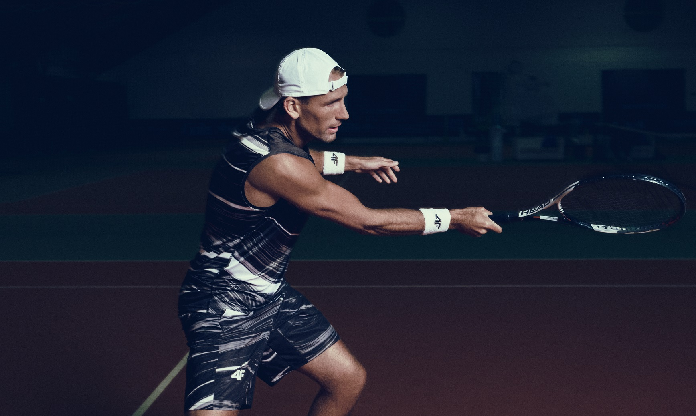
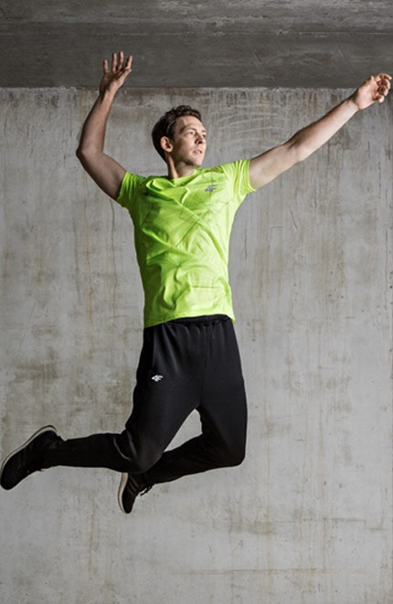
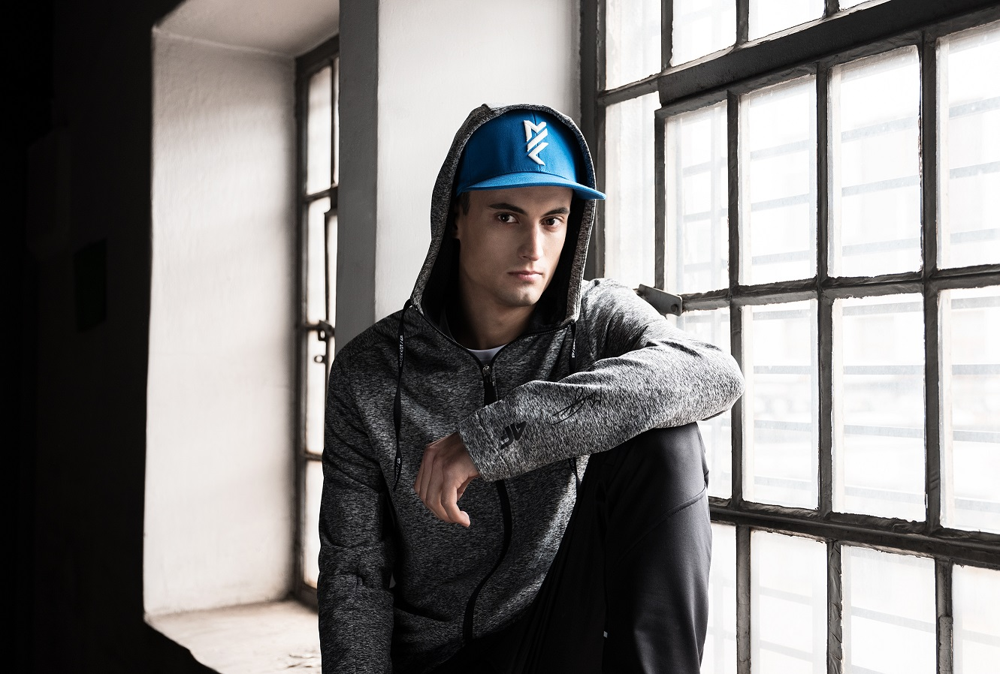

4F brand
4F is a sportswear experience brand created from passion for sports with an utmost attention to high-quality fabrics, modern technologies and trendy design.
Our four F’s stand for Freedom, Fashion, Future and Fit.
4F cares about the appearance of our products and embrace the joy that training brings to our customers.
4F thinks about new technologies, suitable for both present and next generations of athletes.
4F takes part in the largest global sports events and engages in the lives of local sports teams.
4F inspires people to start their adventure with sports and encourages them to make it a part of their daily life.

Winter 2018 collection
4F Winter 2018 collection provides a complete range of skiing apparel that meets the needs of skiers on any skill level. The offer divided into such categories as Comfort, Advanced and HQ Performance, presents a variety of shapes, styles and technologies designed to be individually mixed and matched to personal tastes and requirements. Top quality fabrics, membranes and insulations provide durability, as well as waterproof and coldproof protection, even in extreme conditions. Cutting-edge technologies and functional design ensure comfort on the slope. The collection uses such renowned technologies as Primaloft, Dermizax and 4F NeoDry membrane.

Ambassadors
Furthermore, 4F constantly collaborates with individually selected professional athletes, gaining from their personal insights and experience. The group of brand ambassadors, testing and training in our apparel, includes such athletes as Polish tennis player Łukasz Kubot, Czech sprinter specialising in the 400 metres Patrik Šorm and Latvian alpine skier Miks Zvejnieks.
- Łukasz Kubot
- Stéphane Antiga
- Maciej Kot
-
 Miks Zvejnieks
Miks Zvejnieks
-
 Patrik Šorm
Patrik Šorm